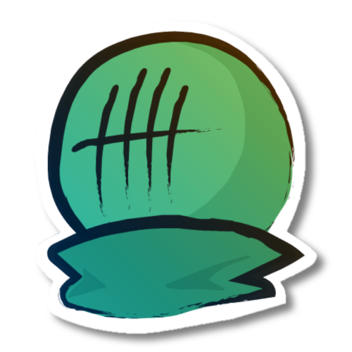

I started animation way back in 2017 as an 8 year old. Back then, I used to watch many stickfigure animators such as the very well-known Alan Becker, various animators from Hyun's Dojo, the original ElementXYZ series and many more.
It was then I started using Pivot Animator and started getting a sense for animation. It was really hard learning animation, but I got a hang of fluidity early on with pivot-based animation software.
Soon, I started using Adobe Animate, and it took a long time to re-learn all of the basics. But now, after a few years using Adobe, I have regained the same level of skill as the pivot-based animation software, leading to the current day.
Contact